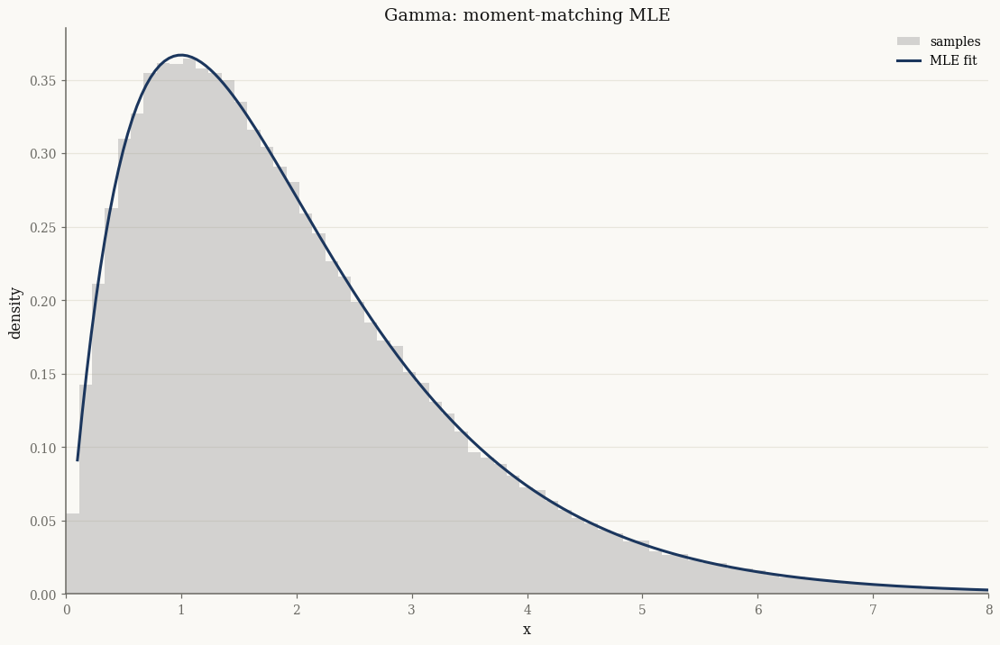

The exponential family#
Every distribution in normix is an exponential family. A density in this class can be written
with three ingredients:
the log base measure \(\log h(x)\),
the sufficient statistics \(t(x)\),
the log-partition function \(\psi(\theta)\) (the normaliser).
This single structure gives us three interchangeable parametrizations and a
uniform recipe for moments, maximum likelihood, and the EM algorithm. This
tutorial walks through that structure on the simplest member of the
family — the Gamma distribution.
import jax
jax.config.update("jax_enable_x64", True)
import jax.numpy as jnp
import numpy as np
from normix import Gamma
from normix.utils.plotting import set_theme
set_theme()
np.set_printoptions(precision=5, suppress=True)
A distribution as a pytree#
A normix distribution is an immutable equinox.Module. We build a Gamma from
its classical shape/rate parameters \((\alpha, \beta)\):
dist = Gamma(alpha=jnp.array(2.0), beta=jnp.array(1.0))
dist.mean(), dist.var(), dist.std()
(Array(2., dtype=float64),
Array(2., dtype=float64),
Array(1.41421, dtype=float64))
The log-density acts on a single observation; batch it with jax.vmap:
x = jnp.linspace(0.1, 8.0, 200)
log_p = jax.vmap(dist.log_prob)(x)
pdf = jax.vmap(dist.pdf)(x)
float(jnp.max(jnp.abs(jnp.exp(log_p) - pdf))) # pdf == exp(log_prob)
0.0
Three parametrizations#
The classical parameters map to natural parameters \(\theta\) and to expectation parameters \(\eta = \nabla\psi(\theta) = \mathbb{E}[t(X)]\). normix exposes all three and converts between them losslessly:
theta = dist.natural_params() # natural θ
eta = dist.expectation_params() # expectation η = ∇ψ(θ) = E[t(X)]
print("theta =", np.asarray(theta))
print("eta =", np.asarray(eta))
theta = [ 1. -1.]
eta = [0.42278 2. ]
# Round-trip: classical → θ → classical and classical → η → classical
d_from_theta = Gamma.from_natural(theta)
d_from_eta = Gamma.from_expectation(eta)
print("from_natural: ", float(d_from_theta.alpha), float(d_from_theta.beta))
print("from_expectation:", float(d_from_eta.alpha), float(d_from_eta.beta))
from_natural: 2.0 1.0
from_expectation: 2.0000000000000036 1.0000000000000018
from_expectation is the workhorse of the M-step: it inverts
\(\eta \mapsto \theta\) by solving a strictly convex problem, so any valid moment
vector \(\eta\) produces a well-defined distribution.
\(\eta\) really is \(\mathbb{E}[t(X)]\)#
The expectation parameters are not an abstraction — they are the mean of the sufficient statistics. We can check this by Monte Carlo:
samples = dist.rvs(200_000, seed=0)
t = jax.vmap(Gamma.sufficient_statistics)(samples) # t(x) = [log x, x] for Gamma
print("E[t(X)] empirical:", np.asarray(t.mean(axis=0)))
print("eta (analytic) :", np.asarray(eta))
E[t(X)] empirical: [0.42388 2.00414]
eta (analytic) : [0.42278 2. ]
Fisher information is the curvature of \(\psi\)#
The Hessian \(\nabla^2\psi(\theta)\) is the Fisher information, and it equals the covariance of the sufficient statistics. normix computes it analytically:
I = dist.fisher_information()
print("I(theta) = Hessian of psi:\n", np.asarray(I))
print("\nCov[t(X)] empirical:\n", np.cov(np.asarray(t), rowvar=False))
I(theta) = Hessian of psi:
[[0.64493 1. ]
[1. 2. ]]
Cov[t(X)] empirical:
[[0.64901 1.00491]
[1.00491 2.01102]]
JAX and CPU backends#
Moments derived from \(\psi\) come in two interchangeable backends: a JIT-able JAX path (the default) and a numpy/scipy CPU path used inside the EM hot loop. They agree to numerical precision:
eta_jax = dist.expectation_params(backend="jax")
eta_cpu = dist.expectation_params(backend="cpu")
float(jnp.max(jnp.abs(eta_jax - jnp.asarray(eta_cpu))))
0.0
Maximum likelihood is one line#
Because the MLE of an exponential family matches moments
(\(\hat\eta = \frac{1}{n}\sum_i t(x_i)\), then \(\hat\theta\) via
from_expectation), fitting is a single call:
fitted = Gamma.fit_mle(samples)
print("true (alpha, beta):", float(dist.alpha), float(dist.beta))
print("MLE (alpha, beta):", float(fitted.alpha), float(fitted.beta))
true (alpha, beta): 2.0 1.0
MLE (alpha, beta): 1.9933564529024204 0.9946213764711547
import matplotlib.pyplot as plt
fig, ax = plt.subplots()
ax.hist(np.asarray(samples), bins=120, density=True, alpha=0.4,
label="samples", color="0.6")
ax.plot(np.asarray(x), np.asarray(jax.vmap(fitted.pdf)(x)), label="MLE fit")
ax.set_xlim(0, 8)
ax.set_xlabel("x")
ax.set_ylabel("density")
ax.set_title("Gamma: moment-matching MLE")
ax.legend()
plt.show()

Takeaways#
A normix distribution is defined by \(\big(\log h,\, t,\, \psi\big)\) and stored as an immutable pytree.
Three parametrizations — classical, natural \(\theta\), expectation \(\eta\) — convert via
natural_params,expectation_params,from_natural,from_expectation.\(\eta = \nabla\psi(\theta) = \mathbb{E}[t(X)]\) and \(\nabla^2\psi(\theta) = \operatorname{Cov}[t(X)]\) is the Fisher information.
Every moment and the MLE follow from \(\psi\), with matching JAX and CPU backends.
Next: A tour of the GH family shows how all the richer distributions are built on top of this base by mixing a normal over a positive subordinator.